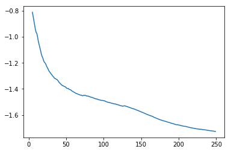

set_seed(999, reproducible=True)DualGAN training loop
Defines the loss and training loop functions/classes for DualGAN.
DualGANLoss
DualGANLoss (dualgan:torch.nn.modules.module.Module, l_adv:float=1.0, l_rec:float=1.0, l_idt:float=0.0)
DualGAN loss function. The individual loss terms are also atrributes of this class that are accessed by fastai for recording during training.
Attributes:
self.dualgan (nn.Module): The DualGAN model.
self.l_A (float): lambda_A, weight of domain A losses.
self.l_B (float): lambda_B, weight of domain B losses.
self.crit (AdaptiveLoss): The adversarial loss function (either a BCE or MSE loss depending on lsgan argument)
self.real_A and self.real_B (fastai.torch_core.TensorImage): Real images from domain A and B.
self.gen_loss (torch.FloatTensor): The generator loss calculated in the forward function
self.cyc_loss (torch.FloatTensor): The cyclic loss calculated in the forward function
compute_gradient_penalty
compute_gradient_penalty (D, real_samples, fake_samples)
Calculates the gradient penalty loss for WGAN GP
DualGANTrainer
DualGANTrainer (n_crit=2, clip_value=0.1, l_gp=None)
Learner Callback for training a DualGAN model.
dual_learner
dual_learner (dls:fastai.data.load.DataLoader, m:upit.models.dualgan.DualGAN, opt_func=<function RMSProp>, loss_func=<class '__main__.DualGANLoss'>, show_imgs:bool=True, imgA:bool=True, imgB:bool=True, show_img_interval:bool=10, metrics:list=[], cbs:list=[], lr:Union[float,slice]=0.001, splitter:<built- infunctioncallable>=<function trainable_params>, path:Union[str,pathlib.Path,NoneType]=None, model_dir:Union[str,pathlib.Path]='models', wd:Union[float,int,NoneType]=None, wd_bn_bias:bool=False, train_bn:bool=True, moms:tuple=(0.95, 0.85, 0.95), default_cbs:bool=True)
Initialize and return a Learner object with the data in dls, DualGAN model m, optimizer function opt_func, metrics metrics, and callbacks cbs. Additionally, if show_imgs is True, it will show intermediate predictions during training. It will show domain B-to-A predictions if imgA is True and/or domain A-to-B predictions if imgB is True. Additionally, it will show images every show_img_interval epochs. OtherLearner` arguments can be passed as well.
| Type | Default | Details | |
|---|---|---|---|
| dls | DataLoaders | DataLoaders containing fastai or PyTorch DataLoaders |
|
| m | DualGAN | ||
| opt_func | Optimizer | OptimWrapper | Adam | Optimization function for training |
| loss_func | callable | None | None | Loss function. Defaults to dls loss |
| show_imgs | bool | True | |
| imgA | bool | True | |
| imgB | bool | True | |
| show_img_interval | bool | 10 | |
| metrics | callable | MutableSequence | None | None | Metrics to calculate on validation set |
| cbs | Callback | MutableSequence | None | None | Callbacks to add to Learner |
| lr | float | slice | 0.001 | Default learning rate |
| splitter | callable | trainable_params | Split model into parameter groups. Defaults to one parameter group |
| path | str | Path | None | None | Parent directory to save, load, and export models. Defaults to dls path |
| model_dir | str | Path | models | Subdirectory to save and load models |
| wd | float | int | None | None | Default weight decay |
| wd_bn_bias | bool | False | Apply weight decay to normalization and bias parameters |
| train_bn | bool | True | Train frozen normalization layers |
| moms | tuple | (0.95, 0.85, 0.95) | Default momentum for schedulers |
| default_cbs | bool | True | Include default Callbacks |
Quick Test
horse2zebra = untar_data('https://people.eecs.berkeley.edu/~taesung_park/CycleGAN/datasets/horse2zebra.zip')folders = horse2zebra.ls().sorted()trainA_path = folders[2]
trainB_path = folders[3]
testA_path = folders[0]
testB_path = folders[1]dls = get_dls(trainA_path, trainB_path,num_A=100)dual_gan = DualGAN()
learn = dual_learner(dls, dual_gan,show_img_interval=1)learn.show_training_loop()Start Fit
- before_fit : [TrainEvalCallback, ShowImgsCallback, Recorder, ProgressCallback]
Start Epoch Loop
- before_epoch : [Recorder, ProgressCallback]
Start Train
- before_train : [TrainEvalCallback, DualGANTrainer, Recorder, ProgressCallback]
Start Batch Loop
- before_batch : [DualGANTrainer]
- after_pred : [DualGANTrainer]
- after_loss : []
- before_backward: []
- before_step : []
- after_step : []
- after_cancel_batch: []
- after_batch : [TrainEvalCallback, Recorder, ProgressCallback]
End Batch Loop
End Train
- after_cancel_train: [Recorder]
- after_train : [Recorder, ProgressCallback]
Start Valid
- before_validate: [TrainEvalCallback, Recorder, ProgressCallback]
Start Batch Loop
- **CBs same as train batch**: []
End Batch Loop
End Valid
- after_cancel_validate: [Recorder]
- after_validate : [Recorder, ProgressCallback]
End Epoch Loop
- after_cancel_epoch: []
- after_epoch : [ShowImgsCallback, Recorder]
End Fit
- after_cancel_fit: []
- after_fit : [ProgressCallback]test_eq(type(learn),Learner)learn.fit_flat_lin(5,5,2e-4)| epoch | train_loss | adv_loss_A | adv_loss_B | rec_loss_A | rec_loss_B | D_A_loss | D_B_loss | time |
|---|---|---|---|---|---|---|---|---|
| 0 | -1.225994 | -0.965739 | -0.931990 | 0.354460 | 0.353114 | -0.010898 | -0.002097 | 00:06 |
| 1 | -1.383732 | -0.999190 | -0.998738 | 0.258967 | 0.261373 | -0.000011 | -0.000268 | 00:06 |
| 2 | -1.448422 | -0.999503 | -0.999257 | 0.244793 | 0.240065 | 0.000066 | -0.000068 | 00:06 |
| 3 | -1.488793 | -0.999653 | -0.999547 | 0.240394 | 0.223500 | 0.000069 | -0.000088 | 00:07 |
| 4 | -1.529549 | -0.999728 | -0.999568 | 0.212509 | 0.204648 | -0.000021 | -0.000083 | 00:07 |
| 5 | -1.574171 | -0.999754 | -0.999664 | 0.190567 | 0.178492 | 0.000010 | -0.000069 | 00:08 |
| 6 | -1.633542 | -0.999816 | -0.999724 | 0.143122 | 0.139768 | 0.000010 | -0.000058 | 00:08 |
| 7 | -1.675023 | -0.999844 | -0.999737 | 0.129500 | 0.133948 | 0.000027 | -0.000105 | 00:08 |
| 8 | -1.706186 | -0.999842 | -0.999745 | 0.118132 | 0.129545 | 0.000022 | -0.000052 | 00:09 |
| 9 | -1.726011 | -0.999837 | -0.999760 | 0.118993 | 0.126145 | -0.000012 | -0.000052 | 00:09 |
/home/tmabraham/anaconda3/lib/python3.7/site-packages/fastprogress/fastprogress.py:74: UserWarning: Your generator is empty.
warn("Your generator is empty.")
learn.recorder.plot_loss(with_valid=False)